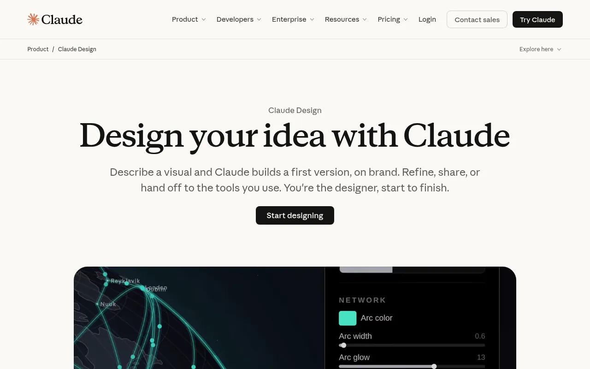
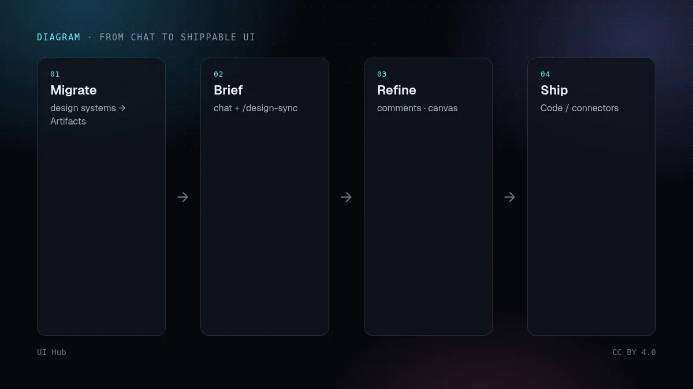
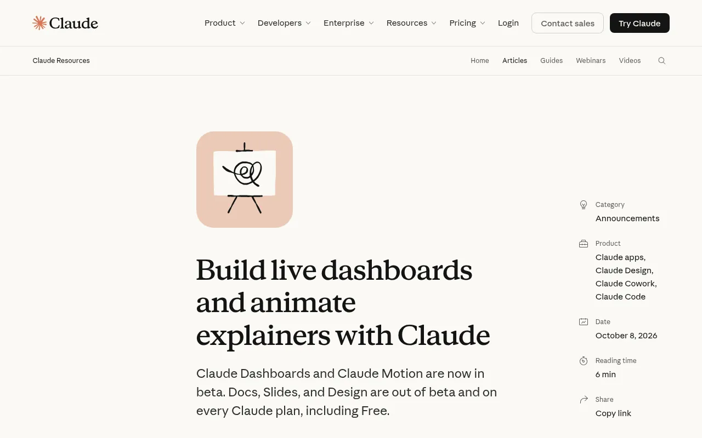

Claude Design 全面开放：退出测试，进入每一场对话Claude Design 全面開放：退出測試，進入每一場對話Claude Design everywhere: out of beta, into every chatClaude Designが正式版に：すべての会話で使えるClaude Design 정식 출시: 모든 대화에서 사용Claude Design di mana-mana: keluar beta, masuk setiap sembangClaude Design mọi nơi: hết beta, vào mọi cuộc trò chuyệnClaude Design partout : fin du bêta, dans chaque chatClaude Design en todas partes: fuera de beta, en cada chatClaude Design überall: aus der Beta, in jedem Chat
Anthropic 让 Docs、Slides、Design 在所有套餐正式可用，推出 Dashboards 与 Motion 测试版，并宣布独立 Design 站点将于 2026-12-14 关闭。界面构建者现在就该迁移设计系统。Anthropic 讓 Docs、Slides、Design 在所有方案正式可用，推出 Dashboards 與 Motion 測試版，並宣布獨立 Design 站點將於 2026-12-14 關閉。介面建構者現在就該遷移設計系統。Anthropic took Docs, Slides and Design out of beta on every plan, launched Dashboards and Motion in beta, and will close the standalone Design site on 14 Dec 2026. For UI builders the practical move is to migrate the design system now.AnthropicはDocs/Slides/Designを全プランで正式化し、DashboardsとMotionのベータを開始。スタンドアロンDesignは2026-12-14閉鎖。UI制作者は今すぐデザインシステムを移行すべき。Anthropic이 Docs·Slides·Design을 전 요금제에서 정식 출시하고 Dashboards·Motion 베타를 열었으며, 단독 Design 사이트는 2026-12-14에 닫힌다. UI 제작자는 지금 디자인 시스템을 옮겨야 한다.Anthropic keluarkan Docs, Slides dan Design dari beta pada semua pelan, lancar Dashboards dan Motion beta, dan tutup tapak Design berasingan pada 14 Dis 2026. Pembina UI patut pindahkan sistem reka bentuk sekarang.Anthropic đưa Docs, Slides và Design ra khỏi beta trên mọi gói, mở beta Dashboards và Motion, và đóng site Design độc lập vào 14/12/2026. Người dựng UI nên migrate design system ngay.Anthropic sort Docs, Slides et Design du bêta sur tous les forfaits, lance Dashboards et Motion en bêta, et fermera le site Design autonome le 14 déc. 2026. Les builders UI doivent migrer le design system maintenant.Anthropic saca Docs, Slides y Design de beta en todos los planes, lanza Dashboards y Motion en beta, y cerrará el sitio Design independiente el 14 dic 2026. Quien construye UI debe migrar el design system ya.Anthropic nimmt Docs, Slides und Design auf allen Plänen aus der Beta, startet Dashboards und Motion in Beta und schließt die eigenständige Design-Site am 14. Dez. 2026. UI-Builder sollten das Design System jetzt migrieren.

正文以簡體中文顯示。
本文は英語で表示しています。
본문은 영어로 표시됩니다.
Kandungan dipaparkan dalam bahasa Inggeris.
Nội dung hiển thị bằng tiếng Anh.
Le corps de l’article est en anglais.
El cuerpo del artículo está en inglés.
Der Beitragstext ist auf Englisch.
On 8 October 2026 Anthropic published a product update that matters more for design-and-code workflows than the headline tools might suggest. Claude Dashboards and Claude Motion entered beta; Claude Docs, Slides and Design left beta and are available on every Claude plan, including Free. The same post says the standalone Claude Design site at claude.ai/design stays open only until 14 December 2026, after which design work lives inside ordinary Claude conversations, Claude Code and the Artifacts tab.

What actually shipped
- Design in every chat. Anthropic’s product page and help centre describe Claude Design as an artifact template: describe a visual, get a canvas beside the conversation, then refine with chat, inline comments and on-canvas edits. It works in Claude Code via
/designand/design-sync, and on mobile for viewing and editing (sharing settings stay on web/desktop). - Design systems travel with you. Systems can be imported from GitHub, design files or a local codebase. Teams that used the standalone site can click “Migrate team design systems” on the Artifacts page; Anthropic notes migrated systems may need a “Let Claude clean it up” pass.
- Dashboards (beta, paid). Connect Redshift, BigQuery, ClickHouse, Databricks, Snowflake or Salesforce-style connectors, ask in plain language, and get a live dashboard. Each number exposes the query behind it and a refresh time; deeper analysis can be sent to tools such as Amplitude, Grafana, Hex, Mixpanel, Omni, Perplexity, PostHog or Sigma.
- Motion (beta, Team/Enterprise). Claude writes code that animates your own text, charts, shapes and images into a short explainer you can edit and export as MP4. Anthropic states it does not use a video-generation model and does not invent footage or people.
- Enterprise defaults. Docs, Slides and Design turn on by default on 15 October 2026 (except HIPAA-enabled orgs). Dashboards and Motion stay off until an admin enables them under Organization settings → Artifacts.

Why it matters for UI builders
The useful shift is not “another AI design toy”. It is that the brief, the design system and the coding agent share one conversation surface. A prototype can start next to a requirements thread, inherit components via /design-sync, and hand off to Claude Code without screenshot archaeology. Connectors listed on the product page (Adobe, Canva, Gamma, Lovable, Miro, Replit, Vercel, Wix and others) push the same artifact into the tools you already ship from.
Anthropic’s own announcement claims more than 45 million docs, decks and designs since those templates arrived in every conversation. Treat that as a usage signal, not a quality guarantee: the ceiling is still your tokens, your refuse-list and whether an admin locked a single approved system.
Our take
Migrate the design system before December, not the day the standalone URL dies. Enterprise teams should treat 15 October as the day Design becomes ambient for everyone who can open Claude—so lock publishing rights and a default system first, or you will get fast, on-brand-looking noise. Prefer Motion when the story is your own data and copy; reach for a dedicated video model when you need filmed scenes. Prefer Dashboards for exploratory questions where seeing the SQL builds trust; keep your BI stack for governed reporting.

Practical checklist
- Open Artifacts → migrate team design systems; run the clean-up pass on each.
- In Claude Code, run
/design-syncagainst the repo that owns tokens and components. - Write a short house guideline (tokens, type scale, never-list) the same way you would for Figma’s agent or a SKILL.md—Claude Design still needs a file it can obey.
- Enterprise admins: decide before 15 October whether Docs/Slides/Design should stay default-on; enable Dashboards/Motion only after data connectors are reviewed.
- Export path: HTML / PDF / PPTX for stakeholders; hand off to Claude Code or a connector (v0, Vercel, Lovable, Replit…) when the next step is production UI.
- Verify like any generated UI: real content, focus rings, light/dark, 390px and 1440px—not only the canvas preview.
2026 年 10 月 8 日，Anthropic 发了一则对「设计 + 代码」工作流比标题工具更要紧的产品更新：Claude Dashboards 与 Claude Motion 进入测试；Claude Docs、Slides、Design 退出测试，并在包括免费版在内的所有 Claude 套餐可用。同一篇文章写明，独立站点 claude.ai/design 只开放到 2026 年 12 月 14 日，之后设计工作落在普通对话、Claude Code 和 Artifacts 页签里。
到底上线了什么
- 每场对话里的 Design。产品页与帮助中心把 Claude Design 描述成一种 Artifact 模板：描述视觉效果，对话旁出现画布，再用聊天、行内评论和画布编辑迭代。Claude Code 里可用
/design与/design-sync；移动端可查看和编辑（分享设置仍在网页/桌面）。 - 设计系统跟着走。可从 GitHub、设计文件或本地代码库导入。用过独立站点的团队可在 Artifacts 页点击「Migrate team design systems」；Anthropic 提示迁移后的系统可能需要「Let Claude clean it up」。
- Dashboards（测试版，付费）。连接 Redshift、BigQuery、ClickHouse、Databricks、Snowflake 或 Salesforce 类连接器，用自然语言提问，得到会随数据更新的仪表盘。每个数字可查看背后的查询与刷新时间；更深分析可送到 Amplitude、Grafana、Hex、Mixpanel、Omni、Perplexity、PostHog、Sigma 等。
- Motion（测试版，Team/Enterprise）。Claude 写代码来动画化你自己的文字、图表、形状与图片，导出 MP4。Anthropic 明确说它不用视频生成模型，也不捏造镜头或人物。
- 企业默认。Docs、Slides、Design 于 2026 年 10 月 15 日默认开启（HIPAA 组织除外）。Dashboards 与 Motion 需管理员在 Organization settings → Artifacts 打开。
对界面构建者为什么重要
真正有用的变化不是「又一个 AI 画图玩具」，而是简报、设计系统和编码智能体共享同一对话面。原型可以紧挨需求线程开始，经 /design-sync 继承组件，再交给 Claude Code，少做截图考古。产品页列出的连接器（Adobe、Canva、Gamma、Lovable、Miro、Replit、Vercel、Wix 等）把同一份产物推进你本来就在用的发布工具。
官方公告称，这些模板进入每场对话以来，已有超过 4500 万份文档、幻灯片与设计。把它当作用量信号，而不是质量保证：上限仍取决于你的 Token、禁止清单，以及管理员是否锁定了唯一批准的系统。
我们的看法
在 12 月独立 URL 失效前迁移设计系统，不要拖到最后一天。企业团队应把 10 月 15 日当成 Design 对所有能打开 Claude 的人「默认存在」的日子——先锁定发布权限与默认系统，否则只会得到又快又像品牌的噪声。故事是你自己的数据与文案时用 Motion；需要实拍场景时再用专用视频模型。探索性问题、且希望看见 SQL 以建立信任时用 Dashboards；受治理的报表仍留给 BI 栈。
实操清单
- 打开 Artifacts → 迁移团队设计系统；对每个系统跑清理。
- 在 Claude Code 对拥有 Token 与组件的仓库执行
/design-sync。 - 写一份短的家规（Token、字号阶梯、禁止清单），写法同给 Figma 智能体或 SKILL.md——Claude Design 同样需要可读的约束文件。
- 企业管理员：在 10 月 15 日前决定 Docs/Slides/Design 是否保持默认开启；审过数据连接器后再开 Dashboards/Motion。
- 导出路径：给干系人用 HTML / PDF / PPTX；下一步是生产界面时交给 Claude Code 或连接器（v0、Vercel、Lovable、Replit…）。
- 像验证任何生成界面一样验收：真实内容、焦点环、亮/暗色、390px 与 1440px——不要只看画布预览。
On 8 October 2026 Anthropic published a product update that matters more for design-and-code workflows than the headline tools might suggest. Claude Dashboards and Claude Motion entered beta; Claude Docs, Slides and Design left beta and are available on every Claude plan, including Free. The same post says the standalone Claude Design site at claude.ai/design stays open only until 14 December 2026, after which design work lives inside ordinary Claude conversations, Claude Code and the Artifacts tab.
What actually shipped
- Design in every chat. Anthropic’s product page and help centre describe Claude Design as an artifact template: describe a visual, get a canvas beside the conversation, then refine with chat, inline comments and on-canvas edits. It works in Claude Code via
/designand/design-sync, and on mobile for viewing and editing (sharing settings stay on web/desktop). - Design systems travel with you. Systems can be imported from GitHub, design files or a local codebase. Teams that used the standalone site can click “Migrate team design systems” on the Artifacts page; Anthropic notes migrated systems may need a “Let Claude clean it up” pass.
- Dashboards (beta, paid). Connect Redshift, BigQuery, ClickHouse, Databricks, Snowflake or Salesforce-style connectors, ask in plain language, and get a live dashboard. Each number exposes the query behind it and a refresh time; deeper analysis can be sent to tools such as Amplitude, Grafana, Hex, Mixpanel, Omni, Perplexity, PostHog or Sigma.
- Motion (beta, Team/Enterprise). Claude writes code that animates your own text, charts, shapes and images into a short explainer you can edit and export as MP4. Anthropic states it does not use a video-generation model and does not invent footage or people.
- Enterprise defaults. Docs, Slides and Design turn on by default on 15 October 2026 (except HIPAA-enabled orgs). Dashboards and Motion stay off until an admin enables them under Organization settings → Artifacts.
Why it matters for UI builders
The useful shift is not “another AI design toy”. It is that the brief, the design system and the coding agent share one conversation surface. A prototype can start next to a requirements thread, inherit components via /design-sync, and hand off to Claude Code without screenshot archaeology. Connectors listed on the product page (Adobe, Canva, Gamma, Lovable, Miro, Replit, Vercel, Wix and others) push the same artifact into the tools you already ship from.
Anthropic’s own announcement claims more than 45 million docs, decks and designs since those templates arrived in every conversation. Treat that as a usage signal, not a quality guarantee: the ceiling is still your tokens, your refuse-list and whether an admin locked a single approved system.
Our take
Migrate the design system before December, not the day the standalone URL dies. Enterprise teams should treat 15 October as the day Design becomes ambient for everyone who can open Claude—so lock publishing rights and a default system first, or you will get fast, on-brand-looking noise. Prefer Motion when the story is your own data and copy; reach for a dedicated video model when you need filmed scenes. Prefer Dashboards for exploratory questions where seeing the SQL builds trust; keep your BI stack for governed reporting.
Practical checklist
- Open Artifacts → migrate team design systems; run the clean-up pass on each.
- In Claude Code, run
/design-syncagainst the repo that owns tokens and components. - Write a short house guideline (tokens, type scale, never-list) the same way you would for Figma’s agent or a SKILL.md—Claude Design still needs a file it can obey.
- Enterprise admins: decide before 15 October whether Docs/Slides/Design should stay default-on; enable Dashboards/Motion only after data connectors are reviewed.
- Export path: HTML / PDF / PPTX for stakeholders; hand off to Claude Code or a connector (v0, Vercel, Lovable, Replit…) when the next step is production UI.
- Verify like any generated UI: real content, focus rings, light/dark, 390px and 1440px—not only the canvas preview.
引用来源引用來源References参考文献참고 자료RujukanNguồn tham khảoRéférencesReferenciasQuellen
- Build live dashboards and animate explainers with Claude — Anthropic
- Claude Design product page — Anthropic
- Get started with Claude Design — Claude Help Center
- Claude Design admin guide for Team and Enterprise — Claude Help Center
- Claude Dashboards and Claude Motion: Anthropic’s new beta tools — Mad Robot
相关文章相關文章Related posts関連記事관련 글Artikel berkaitanBài liên quanArticles liésArtículos relacionadosÄhnliche Beiträge

v0 实战：从一句提示到能留下来的 shadcn 代码v0 實戰：從一句提示到能留下來的 shadcn 程式碼v0 in practice: from a prompt to shadcn code you can keepv0実践：プロンプトから残せるshadcnコードへv0 실전: 프롬프트에서 남길 수 있는 shadcn 코드까지v0 secara praktikal: dari prompt ke kod shadcn yang boleh disimpanv0 thực chiến: từ một prompt đến mã shadcn giữ lại đượcv0 en pratique : d'un prompt à du code shadcn qu'on gardev0 en la práctica: de un prompt a código shadcn que puedes conservarv0 in der Praxis: vom Prompt zu shadcn-Code, den man behält
v0 最强的用法是把它当 shadcn/Tailwind 代码生成器，而不是设计神谕。像给工程师写需求一样写提示，然后把代码拉进自己的仓库。v0 最強的用法是把它當 shadcn/Tailwind 程式碼產生器，而不是設計神諭。像給工程師寫需求一樣寫提示，再把程式碼拉進自己的倉庫。v0 is strongest when you treat it as a shadcn/Tailwind code generator, not a design oracle. Brief it like an engineer, then pull the code into your repo.v0はデザインの神託ではなくshadcn/Tailwindのコード生成器として使うと最強。エンジニア向けに指示し、コードを自分のリポジトリへ。v0는 디자인 신탁이 아니라 shadcn/Tailwind 코드 생성기로 쓸 때 가장 강하다. 엔지니어에게 하듯 지시하고 코드를 저장소로 가져오자.v0 paling kuat sebagai penjana kod shadcn/Tailwind. Beri arahan seperti kepada jurutera, kemudian bawa kod ke repo anda.v0 mạnh nhất khi coi là trình sinh mã shadcn/Tailwind. Viết yêu cầu như cho kỹ sư rồi kéo mã về repo.v0 brille comme générateur de code shadcn/Tailwind. Briefez-le comme un ingénieur puis rapatriez le code.v0 rinde mejor como generador de código shadcn/Tailwind. Instrúyelo como a un ingeniero y lleva el código a tu repo.v0 glänzt als shadcn/Tailwind-Codegenerator. Briefen Sie es wie einen Engineer und holen Sie den Code ins Repo.

Lovable 与 Bolt：当「提示生成界面」变成「提示生成应用」Lovable 與 Bolt：當「提示產生介面」變成「提示產生應用」Lovable and Bolt: when prompt-to-UI becomes prompt-to-appLovableとBolt：プロンプトからUIがアプリになるときLovable과 Bolt: 프롬프트-UI가 프롬프트-앱이 될 때Lovable dan Bolt: apabila prompt-ke-UI menjadi prompt-ke-aplLovable và Bolt: khi prompt-to-UI thành prompt-to-appLovable et Bolt : quand le prompt-to-UI devient prompt-to-appLovable y Bolt: cuando prompt-to-UI se vuelve prompt-to-appLovable und Bolt: wenn Prompt-to-UI zu Prompt-to-App wird
两者都能生成完整应用，于是设计质量要和数据、登录、部署抢注意力。如何不让视觉沦为事后补丁。兩者都能產生完整應用，於是設計品質要和資料、登入、部署搶注意力。如何不讓視覺淪為事後補丁。Both tools build whole apps, so design quality now competes with data, auth and deploys for attention. How to keep the look from being an afterthought.どちらもアプリ全体を作るため、デザイン品質はデータや認証と注意を奪い合う。見た目を後回しにしない方法。둘 다 앱 전체를 만들기에 디자인 품질이 데이터·인증·배포와 경쟁한다. 외관을 뒷전으로 두지 않는 법.Kedua-duanya membina apl penuh; reka bentuk bersaing dengan data dan auth. Cara elak visual jadi hal kemudian.Cả hai dựng app hoàn chỉnh nên thiết kế phải tranh chú ý với dữ liệu, đăng nhập. Cách để giao diện không bị bỏ quên.Les deux construisent des apps entières : le design rivalise avec données et auth. Comment ne pas le reléguer.Ambos construyen apps completas: el diseño compite con datos y auth. Cómo evitar que quede para después.Beide bauen ganze Apps – Design konkurriert mit Daten und Auth. So bleibt die Optik keine Nebensache.

Figma Make 与 Figma 智能体：AI 搬上画布Figma Make 與 Figma 智慧體：AI 搬上畫布Figma Make and the Figma agent: AI moves onto the canvasFigma MakeとFigmaエージェント：AIがキャンバスへFigma Make와 Figma 에이전트: AI가 캔버스로Figma Make dan ejen Figma: AI pindah ke kanvasFigma Make và agent của Figma: AI lên canvasFigma Make et l'agent Figma : l'IA arrive sur le canevasFigma Make y el agente de Figma: la IA llega al lienzoFigma Make und der Figma-Agent: KI zieht auf die Canvas
Figma Make 把提示变成可交互原型；Figma 智能体自 2026-10-06 正式可用，能读取团队规范文件。为什么规范文件才是关键。Figma Make 把提示變成可互動原型；Figma 智慧體自 2026-10-06 正式可用，能讀取團隊規範檔。為什麼規範檔才是關鍵。Figma Make turns prompts into working prototypes; the Figma agent, generally available since 6 Oct 2026, reads team guideline files. Why the guideline file matters most.Figma Makeはプロンプトを動くプロトタイプに。2026/10/6 GAのエージェントはガイドラインを読む。肝はガイドライン。Figma Make는 프롬프트를 프로토타입으로, 2026-10-06 정식 출시된 에이전트는 가이드라인 파일을 읽는다.Figma Make jadikan prompt prototaip; ejen Figma (GA 6 Okt 2026) membaca fail garis panduan pasukan.Figma Make biến prompt thành prototype; agent Figma (GA 6/10/2026) đọc file hướng dẫn của nhóm.Figma Make transforme des prompts en prototypes ; l'agent (GA le 6/10/2026) lit les guides d'équipe.Figma Make convierte prompts en prototipos; el agente (GA 6/10/2026) lee las guías del equipo.Figma Make macht Prompts zu Prototypen; der Agent (GA 6.10.2026) liest Team-Guidelines.